AI Academy · Level 1 · Grade 6 · Week 6 · Student lesson
Sound Becomes a Signal
Learn to understand, design, build, test and explain AI systems responsibly.
Project: Helpful Classroom Sorter
Before you start
Week 3: comparisons need shared sensor settings.
Plan time to read, investigate and explain. Keep predictions separate from observations.
Student lesson · 1 of 16
Your mission
Your learning target
I can interpret an ordered sequence of sound-signal samples with a stated time interval.
I can explain why summaries or sparse samples can omit changes.
I can separate an audio recording, a transcript and an interpretation of meaning.
Remember before reading
Close your notes first. A rough first answer helps us choose the right starting point; it is not a score for your ability.
Without opening the old lesson, explain one key idea from Pictures Become Numbers. Give an example and a mistake that the idea helps you avoid.
Without opening the old lesson, explain one key idea from Sensors Are Messengers. Give an example and a mistake that the idea helps you avoid.
After trying, check the relevant lesson or ask your teacher. Change the part of your explanation that the evidence shows was wrong.
Computers receive changing measurements, not human-like hearing.
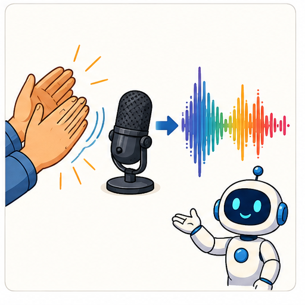
Learner name:
Readiness for the connected explanation
Two image grids have the same number of black pixels. Why can their pictures differ?
This week’s end goal
By the end, I can connect ordered sound samples to timing and explain what a maximum loses.
Student lesson · 2 of 16
Notice the evidence
PICTURE STORY
Look Closely Before You Explain
Pictures give clues; evidence tells us what the clues mean.

What do you notice?
Name three visible details without explaining them yet.
Circle the detail most connected to the system's decision.
Name one detail that may be decoration or distraction.
Make a first prediction and state the clue that supports it.
My observations, prediction, and evidence:
A closer explanation
Sound involves changing pressure in a medium such as air. A microphone responds to that variation and produces a changing signal. A digital recording stores measurements of the signal at successive times. The values are ordered: swapping their times changes the represented pattern.
We will use tiny invented sequences to study this idea on paper. Their values are arbitrary signal units, not decibels or a test of safe listening levels. Real audio uses many more samples, so our five-point examples should not be played as if they were a realistic recording of speech.
A recording must include enough information to interpret the values, including their time spacing and encoding. The sequence 0,2,0,2,0 does not by itself say how quickly the changes happened. This is similar to needing image dimensions as well as pixel values.
Student lesson · 3 of 16
See how it works
VISUAL MECHANISM
Input → Process → Output
Follow the information instead of imagining magic inside the machine.
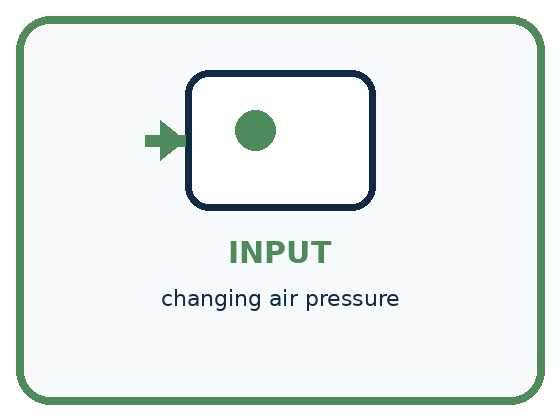
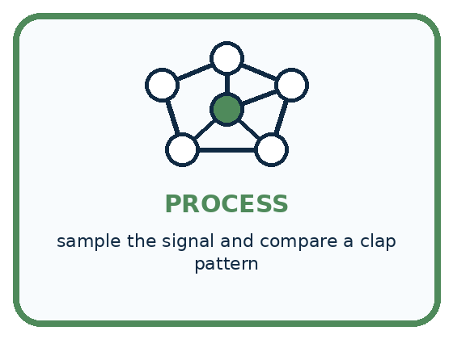
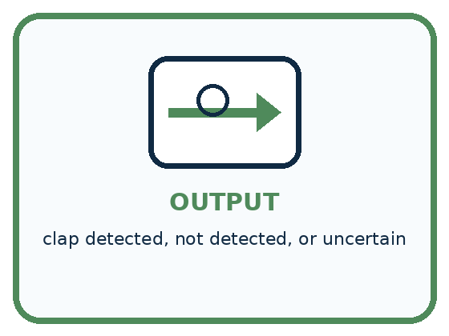
INPUT changing air pressure
PROCESS sample the signal and compare a clap pattern
OUTPUT clap detected, not detected, or uncertain
Draw a fresh example with all three stages:
A closer explanation
Three stages in a speech system
| Time in milliseconds | 0 | 1 | 2 | 3 | 4 |
|---|---|---|---|---|---|
| Invented signal value | 0 | 2 | 0 | 2 | 0 |
There are five samples with four gaps between the first and last. Each gap is 1 millisecond, so the elapsed time from first to last is 4 milliseconds. If the same five values were spaced 2 milliseconds apart, they would span 8 milliseconds. Equal value lists with different timing do not describe the same time pattern.
Connect the picture and the explanation
Point to the input, the deciding step and the result in this week’s visual. Explain the same step in ordinary words. A picture helps when you can say what each part represents.
Student lesson · 4 of 16
Compare the cases
PICTURE GALLERY
Four Cases, Four Clues
Use the visual cue, then read the evidence carefully.
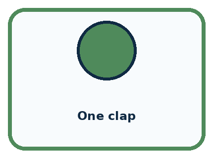
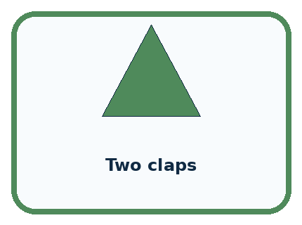
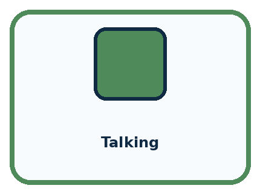
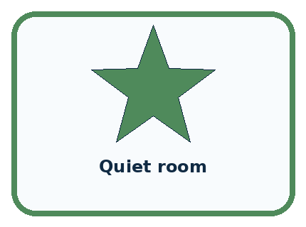
CASE 1 — One clap Clue: single sharp peak. Meaning: target pattern.
CASE 2 — Two claps Clue: two separated peaks. Meaning: different timing pattern.
CASE 3 — Talking Clue: many irregular changes. Meaning: possible false trigger.
CASE 4 — Quiet room Clue: small background values. Meaning: baseline.
Which two pictures are easiest to confuse? What evidence separates them?
Change one thing in the pictured case
Change: Retain only samples at 0,2,4 ms.
Prediction: Both retained sequences are 0,0,0.
Reason: The selected times omit both nonzero samples from each signal.
Student lesson · 5 of 16
Words that unlock the idea
VOCABULARY
Words You Can See and Use
The badge is a memory cue; the definition does the real thinking work.
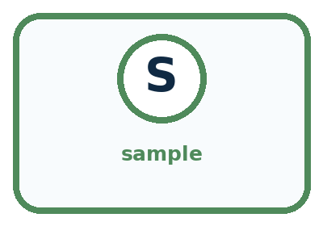
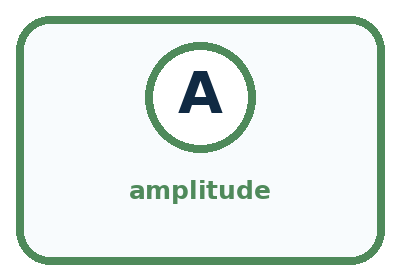
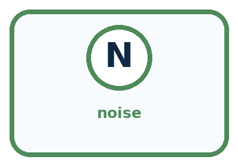
| Word | Meaning | My example |
|---|---|---|
| waveform | graph of a signal changing over time | |
| sample | one measurement at one moment | |
| amplitude | size or strength of a signal value | |
| noise | unwanted signal mixed with the target |
Misconception detective
CLAIM TO REPAIR A loud sound must be a clap.
Use one vocabulary word and one piece of evidence to repair it:
Words used in the closer explanation
| Word | Meaning |
|---|---|
| Signal | A changing physical or recorded quantity that can carry information |
| Sampling interval | The time between successive recorded samples |
| Transcript | A text representation of spoken words, which may contain errors or omit sound details |
Student lesson · 6 of 16
Follow a worked example
WORKED EXAMPLE
Watch the Reasoning, Not Just the Answer
Every step connects a claim to observable evidence.

STEP 1 — OBSERVE changing air pressure
STEP 2 — TRACE sample the signal and compare a clap pattern
STEP 3 — CONCLUDE clap detected, not detected, or uncertain
What new evidence could change this answer?
A closer explanation
The largest value in 0,2,0,2,0 is 2. The largest value in 0,0,2,0,0 is also 2. The first sequence reaches 2 twice at different times, while the second does so once. Keeping only the maximum loses that distinction, just as counting black pixels lost their arrangement.
Sparse measurements can also miss changes. If we inspect the first sequence only at times 0, 2 and 4 milliseconds, all retained values are 0. The two intervening values of 2 disappear from the record. It would be incorrect to conclude from these retained samples alone that the signal stayed at zero between them.
More frequent sampling can preserve faster changes under suitable recording conditions, but sampling frequency alone does not make every recording clear. Microphone placement, background sound, clipping and the recording format can also matter. We are studying one source of missing information, not a complete audio engineering specification.
Learn from the worked case
Cover the result before checking it. Say what is given, choose the procedure, and follow one step at a time. Then uncover the result and explain your first mismatch. Ask why a step is allowed, not only what number it produces.
A pictorial worked case: Sound Becomes a Signal
A fictional microphone display records five samples during a short classroom tap.
The facts we will use
Times are 0,1,2,3,4 ms in order.
Signal A: 0,3,0,1,0. Signal B: 0,1,0,3,0. Toy values are signed measurement units; these happen to be nonnegative.
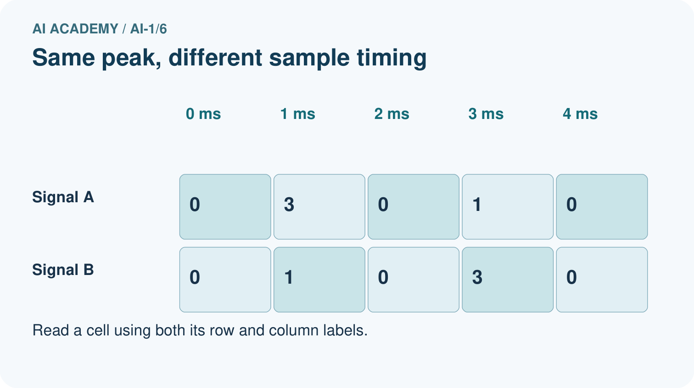
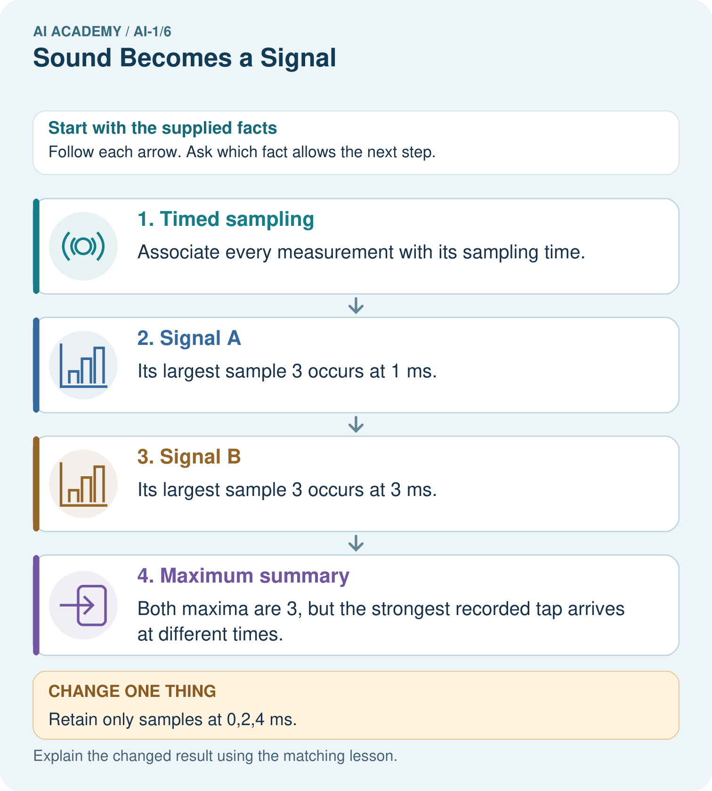
Read the picture one step at a time
Why this result follows
The sequences contain the same values in different orders. Keeping the maximum preserves peak recorded value while losing its timing. A graph should keep time on the horizontal axis; shuffling samples changes the recorded signal even if its maximum stays fixed.
What this example does not establish
These sparse toy values cannot establish perceived loudness, pitch or what happened between sampling times.
Read the labelled picture: Does the all-zero retained record prove the full signal was silent? Use the picture.
Change one thing: Retain only samples at 0,2,4 ms. Predict the result before checking the explanation. What remains the same?
Student lesson · 7 of 16
Find and repair a mistake
COMPARE
Same Result, Different Reason
A comparison helps reveal the true concept boundary.
| Case | Evidence | What it shows |
|---|---|---|
| One clap | single sharp peak | target pattern |
| Two claps | two separated peaks | different timing pattern |
| Talking | many irregular changes | possible false trigger |
| Quiet room | small background values | baseline |
Repair two tempting claims
CLAIM A A loud sound must be a clap.
Repair:
CLAIM B Silence means the sensor has no data.
Repair:
A closer explanation
A transcript might record the words Fine, thank you while omitting a pause, a laugh or overlapping speech. It might also record the wrong words. Text can be useful for searching spoken content, but it is not the same representation as the audio. Do not infer a speaker's emotions with certainty from a short transcript.
In a voice calculator, audio saying sixteen can be transcribed as sixty. A calculator can then correctly divide sixty by four and return fifteen. Inspecting the intermediate transcript identifies the first mismatch. Confirming the interpreted numbers before acting can prevent this particular error from travelling into a later stage.
Student lesson · 8 of 16
Practise together
GUIDED PRACTICE
Try It, Check It, Explain It
Use support now so you can succeed independently later.

Explain how the picture story demonstrates this idea: Computers receive changing measurements, not human-like hearing.
Use a fresh example to explain waveform.
Trace a new input → process → output example.
Find and repair the error in: Silence means the sensor has no data.
Invent one edge case and name the safe response.
A closer explanation
A five-sample record has values 0,3,0,1,0 at times 0,2,4,6,8 milliseconds. Read the timing before answering. The first-to-last duration is the final time minus the initial time, not the sample count multiplied by the gap.
To test a claim about the spaces between samples, construct another possible sequence that agrees at retained times but differs between them. If both match the stored record, that record alone cannot decide which intervening pattern occurred.
Practise with less help: Inspect what was discarded
Use workbook W2 for the connected example “Sound as sampled information”. First fill the input and rule boxes. Try the middle steps before asking for a hint. After a hint, try the next step yourself.
| Plan | Do | Check |
|---|---|---|
| What is given? Which rule or procedure applies? | Record each intermediate step. | Does the result follow? What remains unknown? |
Explain your trace to a partner. Your partner points to one step to check. Swap roles on the next case. Each person writes their own explanation.
Check your reasoning
Use the worked case for Sound as sampled information. Proposed explanation: “Five samples make five gaps”. Decide whether this explanation is supported. Point to the step or supplied fact that decides; explain your repair if needed.
Answer on your own before discussion. If you are unsure, say which step you need help with.
Explain the picture
Does the all-zero retained record prove the full signal was silent? Use the picture.
This is supported practice. Keep the separately named independent case for an attempt before feedback.
Student lesson · 9 of 16
Run the investigation
EXPLORER LAB
Clap Pattern Detector
Predict first, test honestly, and explain what the evidence means.

State your prediction before the result is known.
Complete the task: Build a clap-pattern detector; test it with background noise.
Keep a normal case and an edge case clearly separated.
Record what happened—even when it does not match your prediction.
Explain the result, one limitation, and the next useful test.
| Case | Prediction | Observed result | What it means |
|---|---|---|---|
| Normal | |||
| Edge |
Plan → try → check
Before trying: what do I expect, and why? While trying: which step could first go wrong? Afterwards: what did I actually observe, and what should change? Keep “not run” if you only traced the procedure.
Student lesson · 10 of 16
Build your understanding
PRACTICE LADDER
Climb from Recall to Defense
Each step asks for a stronger kind of understanding.

RECALL Define waveform.
EXPLAIN Computers receive changing measurements, not human-like hearing.
TRACE Show the input, process, and output.
DIAGNOSE Repair: A loud sound must be a clap.
TRANSFER Apply the idea to a new home or classroom case.
CREATE Design one revealing test.
DEFEND Give a claim, evidence, mechanism, limit, and safe action.
Student lesson · 11 of 16
Connect your project
PROJECT
Helpful Classroom Sorter
Build one coherent system across the year, one evidence-based decision at a time.

What real classroom need does this serve?
What information is necessary—and what should stay private?
What happens inside the process?
What normal and edge cases will you test?
When should it say not sure or ask a person?

My project decision:
Evidence for your project
Record the sorter’s sampling interval and retain relevant sequences when a decision depends on changes over time.
Student lesson · 12 of 16
Show what you know
MASTERY
Fresh-Case Independent Proof
Complete this after teaching and guided practice have ended.

□ Name or draw the fresh case.
□ Trace input, process, and output.
□ State the conclusion and strongest evidence.
□ Name one limit, failure, missing clue, or fairness/privacy concern.
□ Explain one safe next action or improvement.
Independent evidence:
My level: □ Not yet □ With one hint □ Independently □ I can teach it
Student lesson · 13 of 16
Study a complete case
Week 6 Worked case
Use the supplied details to practise the weekly concept before attempting the independent question. This case extends the illustrated lesson.
The situation
A microphone records quiet and loud claps at the same distance and settings.
The question
What waveform difference is expected? Does it reveal a spoken word?
Worked explanation
The louder clap generally produces larger amplitude. Amplitude is not word meaning. Distance, gain and noise must be controlled.
Explain it in your own words
Which detail supports the answer, and why does it matter?
Trace the supplied case visually
Sound samples show changes in amplitude
| Evidence or stage | Value or result |
|---|---|
| Quiet clap | 1 |
| Loud clap | 3 |
A microphone records quiet and loud claps at the same distance and settings.
What waveform difference is expected? Does it reveal a spoken word?
The louder clap generally produces larger amplitude. Amplitude is not word meaning. Distance, gain and noise must be controlled.
Student lesson · 14 of 16
Try a new case independently
Independent case: Construct a new hidden change
A record keeps values 0 at times 0,3,6 milliseconds. Construct two seven-sample sequences for every whole-millisecond time from 0 through 6 that agree with those retained values but differ at omitted times. Explain why the retained record cannot prove that nothing changed between measurements.
Attempt this case before feedback. Record any help. Earlier examples below are further practice; a case already practised with feedback cannot establish fresh transfer.
Week 6 Independent application
Close the worked explanation. Apply the idea to this different question without copying.
Two recordings contain the same word: one quiet and one loud. Which device receives the sound? Does a larger wave automatically mean a different word? Explain.
My answer, with a trace, calculation or supporting evidence
Create and test
Change one relevant detail. Predict the result before testing. Include a boundary or missing-information case when it helps reveal a limit.
My changed input and expected result
Connect to your project
If the sorter uses sound, specify the exact sound pattern needed and test whether classroom noise makes that input unreliable.
The evidence I will keep
Your teacher has the independent answer and scoring criteria. Complete the matching workbook week to keep your practice evidence together.
Transfer practice from the original programme
A whisper recorded close to a microphone has larger sample amplitudes than a shout recorded far away. Does the recording prove the whisper was louder at its source? Propose one controlled follow-up.
Use feedback to improve
Attempt the independent case before hints. Record whether you worked alone, used a hint or followed a model. After feedback, fix the first unsupported step and explain why it changed. A later check uses a changed case, not a copied answer.
Student lesson · 15 of 16
Your lesson route
Start with this question: A fictional microphone display records five samples during a short classroom tap.
| By the end, I can | How I will show it |
|---|---|
| Interpret an ordered sequence of sound-signal samples with a stated time interval | Explain the deciding step, show a trace or test, and state one limit. |
| Explain why summaries or sparse samples can omit changes | Explain the deciding step, show a trace or test, and state one limit. |
| Separate an audio recording, a transcript and an interpretation of meaning | Explain the deciding step, show a trace or test, and state one limit. |
Remember → watch and explain → try with help → investigate → try independently → keep project evidence. Your teacher may spread this lesson across several classes.
Keep your first prediction. Compare it with what the evidence shows and explain any change.
Student lesson · 16 of 16
Finish and return
Close your notes. Explain this goal in your own words: Interpret an ordered sequence of sound-signal samples with a stated time interval
If you are unsure, return to the worked picture and explain one arrow. If you are ready, change an input or assumption and justify your prediction.
Save your workbook evidence. At the next review, try a different case before opening your old answer.